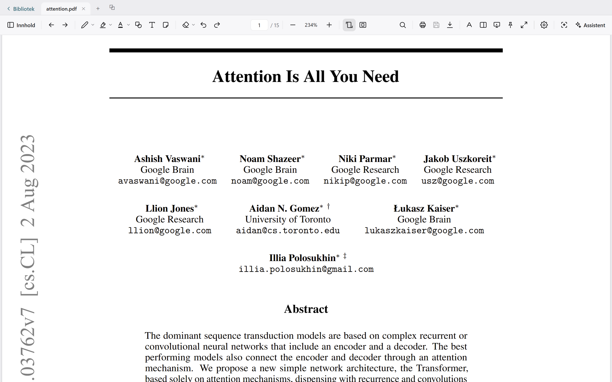
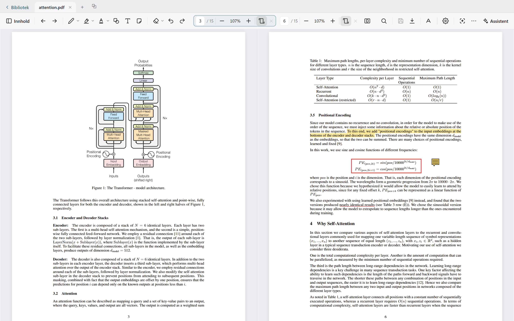
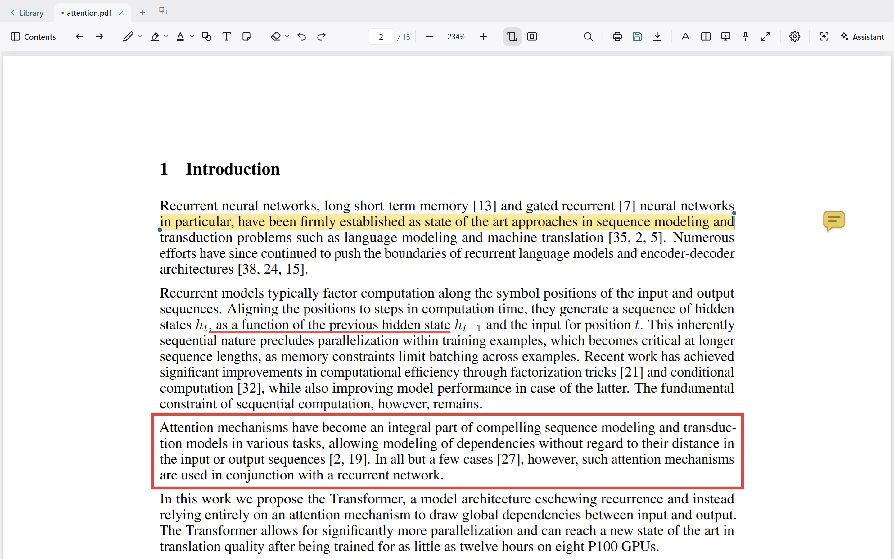
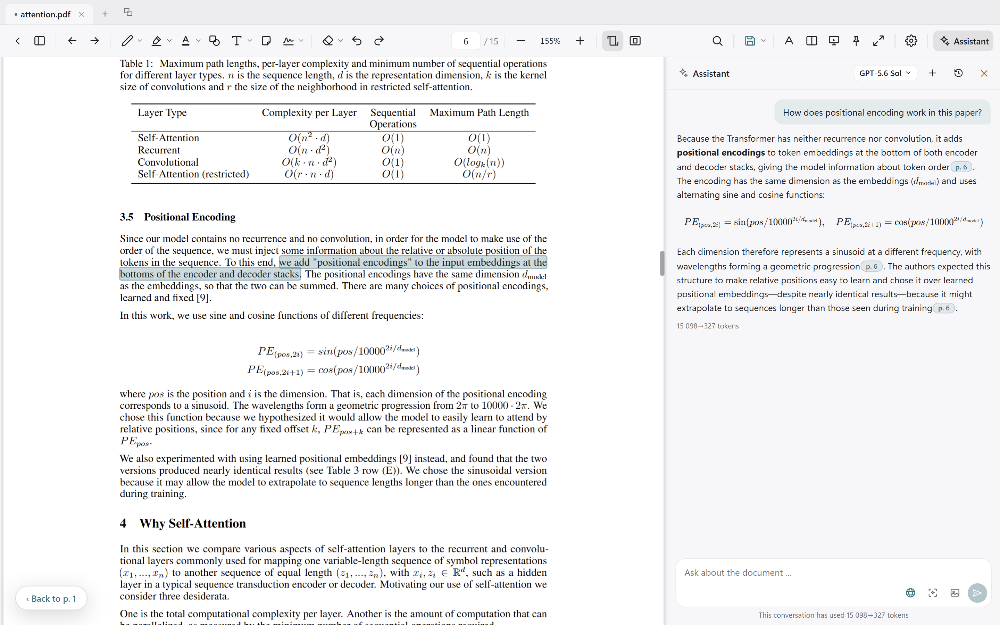
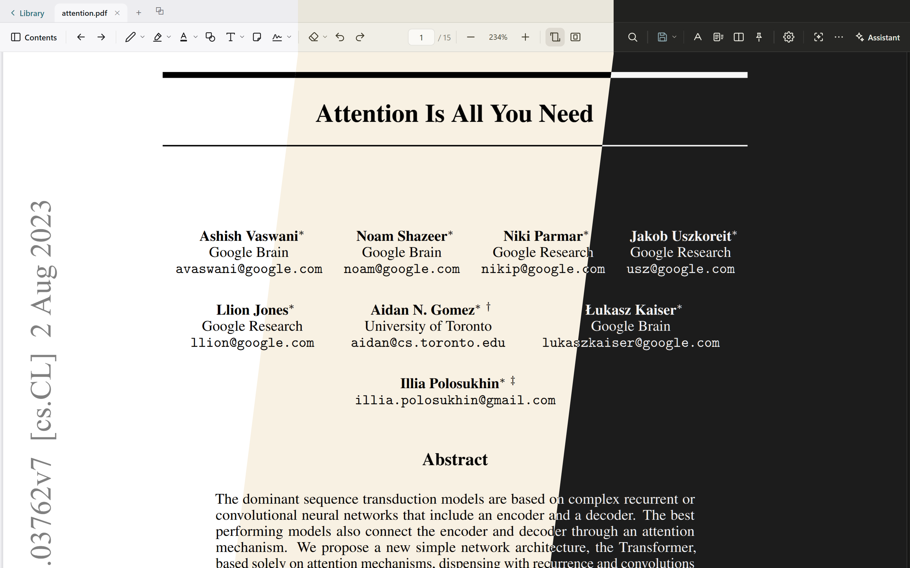

A Windows PDF reader built for reading.
For the documents you work through rather than skim: research articles, reports, books. The window is nearly all page — one slim toolbar carries the tools you use every hour, and everything else stays out of the way until you call it. Free, MIT-licensed, and offline unless you ask a question.

Two pages at once
Every paper eventually asks you to hold two pages in your head at the same time — the argument on one, the table it rests on somewhere else. Press S and you get both.
- Two columns of the same document, each with its own page, zoom and rotation, so a landscape table can sit upright beside portrait text.
- Ctrl+click an internal link to open its target in the other column and keep the page you are on.
- Toggling the split away and back returns the column exactly as you left it — page, spot on the page, zoom and width.

Marks within reach, never in the way
Select a passage and the menu comes to you — highlight, underline, a comment, or a question for the assistant — so marking up a paper never costs a trip to the toolbar and back. Highlight, underline, pen, shapes, sticky notes and free text, each in your own colours.
- Everything you have marked stays one panel away: a notes tab lists every mark by page, with search and a colour filter, and clicking one takes you to it. Export a summary — highlighted text included — to Word, Markdown, HTML or plain text.
- Colour, thickness and opacity per tool, remembered between sessions. The toolbar carries the same tools for marking several passages in a row — and unpins entirely when you want nothing but the page.
- A mark can be corrected rather than redrawn: drag either end of a highlight and it snaps to whole words, or a corner of a shape to resize it.
- The file is only written when you save it. Edits go to a draft until you press Ctrl+S, and unsaved work survives a crash. What you save is standard PDF annotations, so the file reads the same in Acrobat or anywhere else it goes.

An assistant that shows its work
Optional, and it runs on your own API key. Every claim it makes carries a source chip — click one and you land on the sentence the claim came from, so you can check the answer rather than take it on trust.
- Ask about a dense passage, or for a structured summary: research question, method, data, findings, limitations.
- Explain a figure: drag a box around a chart or table and the region lands in the chat for you to ask about.
- Search by meaning — describe a topic in your own words and get the passages that discuss it, ranked and clickable.
- Ask about your own marks: “summarize what I've highlighted.”
- Anthropic, OpenAI or Azure OpenAI. Each answer shows the tokens the provider counted, so the cost stays visible.

A page you can stand to look at all day
Four reading themes — Day, Sepia on warm ivory, and two dark modes, the second with higher contrast — plus Auto, which follows Windows. Contrast and brightness are adjustable within each. The interface is available in Norwegian and English.

Where your document goes
Nowhere, unless you ask a question. Reading, annotating and saving are entirely local, and the app works with no network at all.
When you do use the assistant, the request goes straight to the provider you picked — there is no server of ours in between. Your API key is kept in the platform's own key store: DPAPI on Windows, Keychain on macOS, the system keyring on Linux. The privacy notes have the per-platform detail.